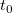
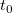
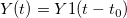
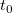

und die Konstante .
und die Konstante .Letztes Update: 06.08.2015
Angenommen, Sie haben zwei zeitlich variierende Signale: Y1 und Y, die in Spalte(B) bzw. Spalte(C) des Arbeitsblatt gespeichert sind.
Das Modell wird zum Berechnen der Laufzeitverzögerung zwischen zwei Signalen verwendet,  für alle und die Konstante .
Sie verwenden die nichtlineare Kurvenanpassung, um zu berechnen, eine benutzerdefinierte Anpassungsfunktion, die folgendermaßen erzeugt werden kann:
| Funktionsname: | fitdelay |
| Funktionstyp: | Benutzerdefiniert |
| Unabhängige Variable: | X |
| Abhängige Variable: | Y |
| Parameternamen: | t0 |
| Funktionsform: | Origin C |
| Funktion: |
Worksheet wks = Project.ActiveLayer(); NLFitContext *pCtxt = Project.GetNLFitContext(); if ( pCtxt ) { static vector vX, vY1; static double nSize; BOOL bIsNewParamValues = pCtxt->IsNewParamValues(); if ( bIsNewParamValues ) { Dataset dsx(wks, 0); Dataset dsy(wks, 1); vX = dsx; vY1 = dsy; nSize = vY1.GetSize(); } double x1; x1 = x-t0; ocmath_interpolate( &x1, &y, 1, vX, vY1, nSize ); } |
Bitte lesen Sie auf dieser Seite die einzelnen Schritte zum Erzeugen von benutzerdefinierten Anpassungsfunktionen nach.
Im Anpassungsfunktionskörper werden die Antwortdaten direkt aus dem aktiven Arbeitsblatt gelesen. Daher sollte die Anpassung aus dem Arbeitsblatt erfolgen.
Schlüsselwörter:Nichtlineare Kurvenanpassung, Signalprozess